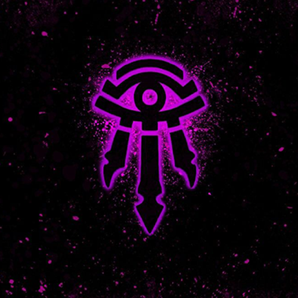

tekst en nog wa tekste
Main characters
Arthas aka Lichking

Arthas Menethil, Crown Prince of Lordaeron and Knight of the Silver Hand, was the son of King Terenas Menethil II and heir to the kingdom's throne. He was trained as a paladin by Uther the Lightbringer and became inducted into the Knights of the Silver Hand. Arthas also had a romantic relationship with the sorceress Jaina Proudmoore. Committed to the protection of his people, Arthas was determined to stop the plague of undeath from infecting Lordaeron.
Jaina Proudmoore

Daughter of Daelin and Katherine Proudmoore and younger sister of Derek and Tandred Proudmoore, she was personally trained in the arts of magic by the legendary Archmage Antonidas of Dalaran, and is considered to be the most powerful human sorceress alive.
Sylvanas Windrunner

Sylvanas Windrunner, the Banshee Queen, the Dark Lady or Queen of the Forsaken is the former Ranger-General of Silvermoon. She currently serves as leader of the Forsaken faction of undead and World of Warcraft: Legion Warchief of the Horde after the Battle on the Broken Shore. She is the middle sister of Alleria and Vereesa Windrunner.
Illidan Stormrage


Illidan Stormrage is the first of the demon hunters, the former self-proclaimed Lord of Outland, the former ruler of the Black Temple, and the original leader of the Illidari. He is the twin brother of Malfurion Stormrage and was, like his sibling, in love with Tyrande Whisperwind. Originally a powerful night elf sorcerer, Illidan officially betrayed his people by defecting to the demonic Burning Legion during the War of the Ancients, though his reasons for doing so were noble as he secretly aimed to repel the Legion's invasion.
Ragnaros

The Firelord and his brethren once held sway over the entire world. As a servant of the Old Gods, he fought against the Titans for domination over the planet. The victorious Titans banished him and his brethren to the Elemental Plane there to remain imprisoned until the end of time.